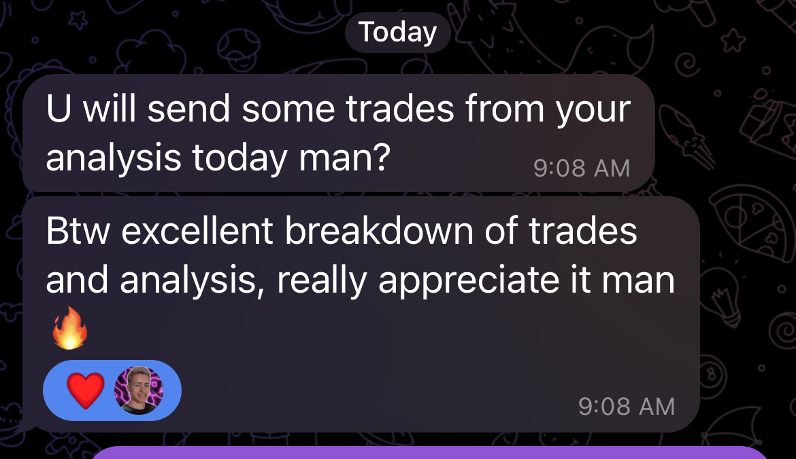

Matchroom / dark archive / Community zuerst
NGU TRADING
Struktur fuer Trader, die funded werden und konsistent bleiben wollen.
NGU verbindet drei Ebenen, die meist getrennt auftreten: eine serioese Trading-Community, einen saubereren Prop-Firm-Vergleich und NGU Edge, das taegliche Execution-System gegen Overtrading, Revenge Trading und Regelbrueche unter Druck.




ProofEchte Trader Rueckmeldungen und verfolgte Ergebnisse bleiben ueber die ganze Flaeche sichtbar.
CompareFunded Firmen werden als Wege gerahmt, nicht als Rabatt-Banner.